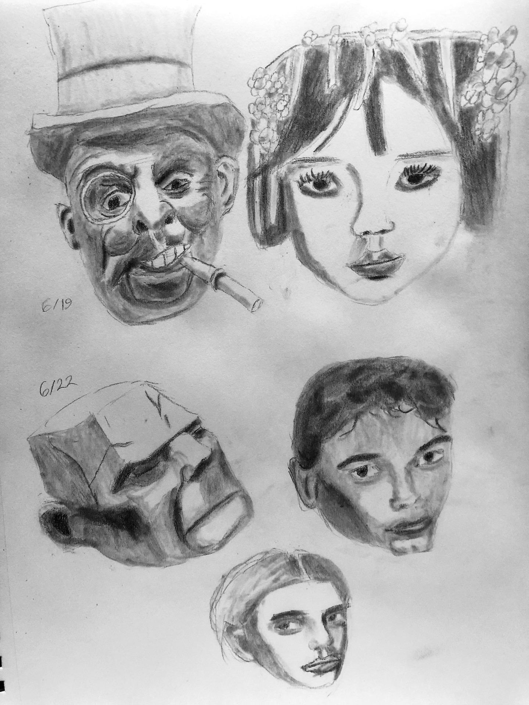
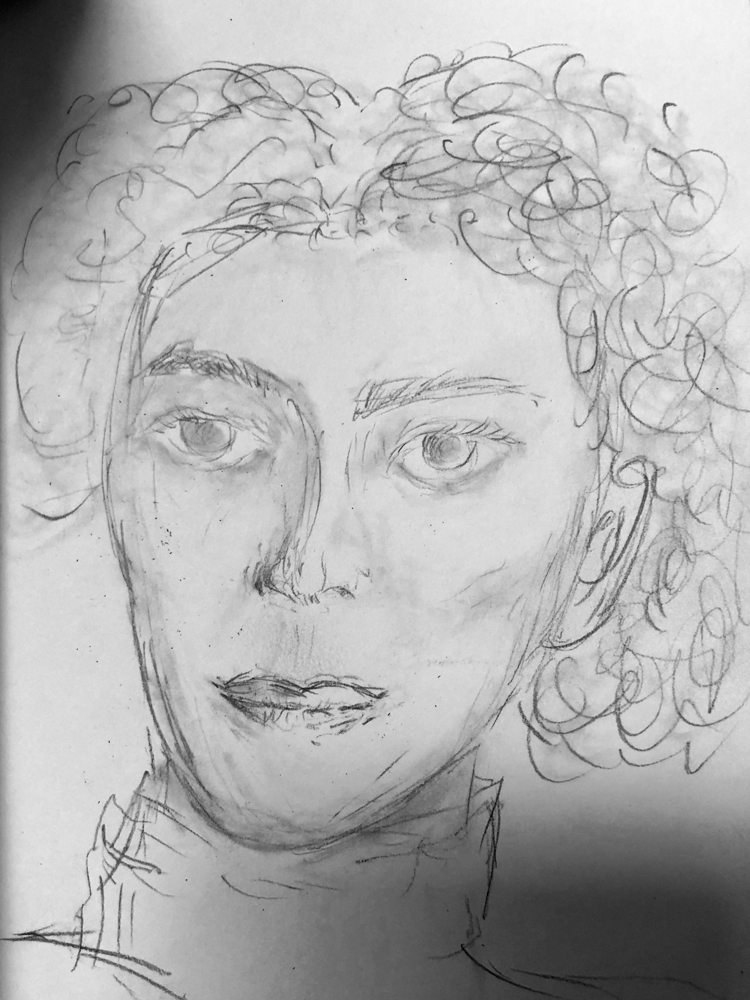
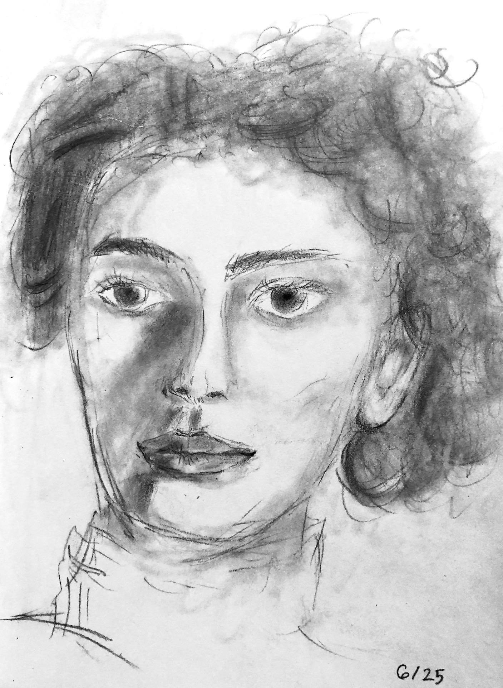
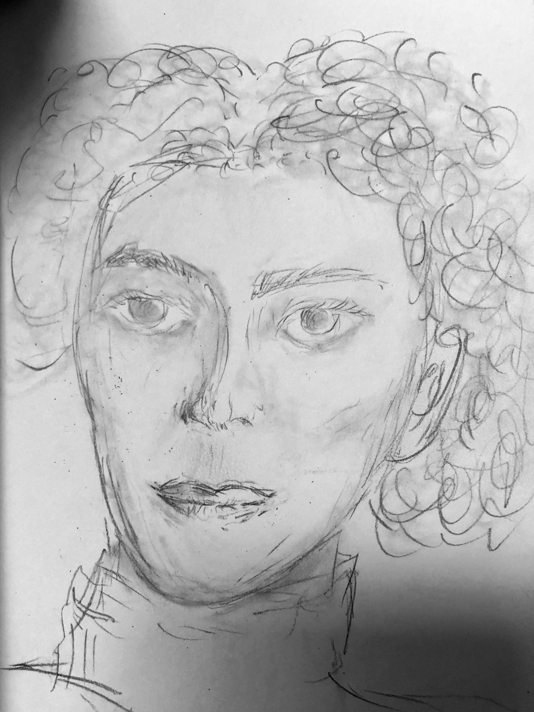
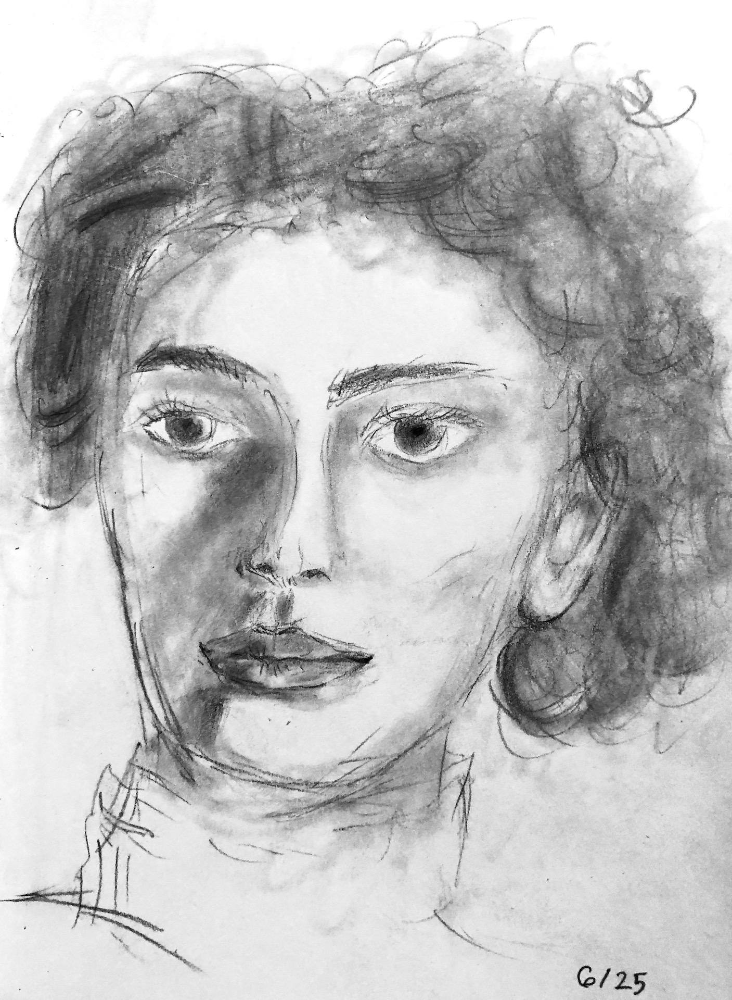
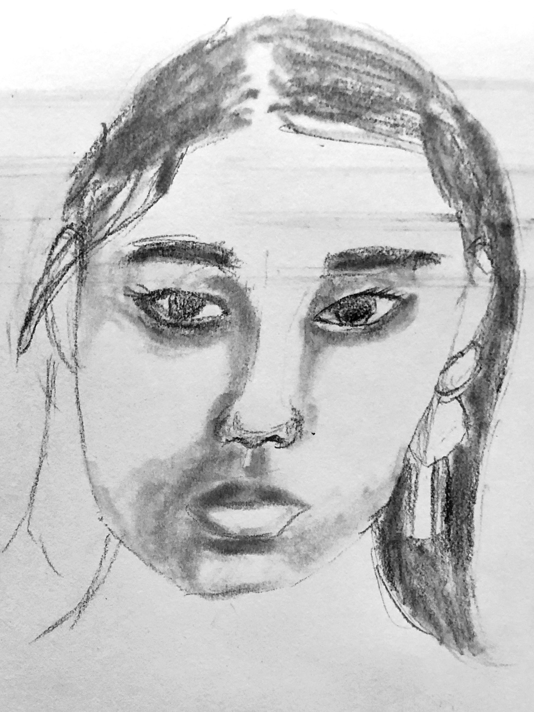
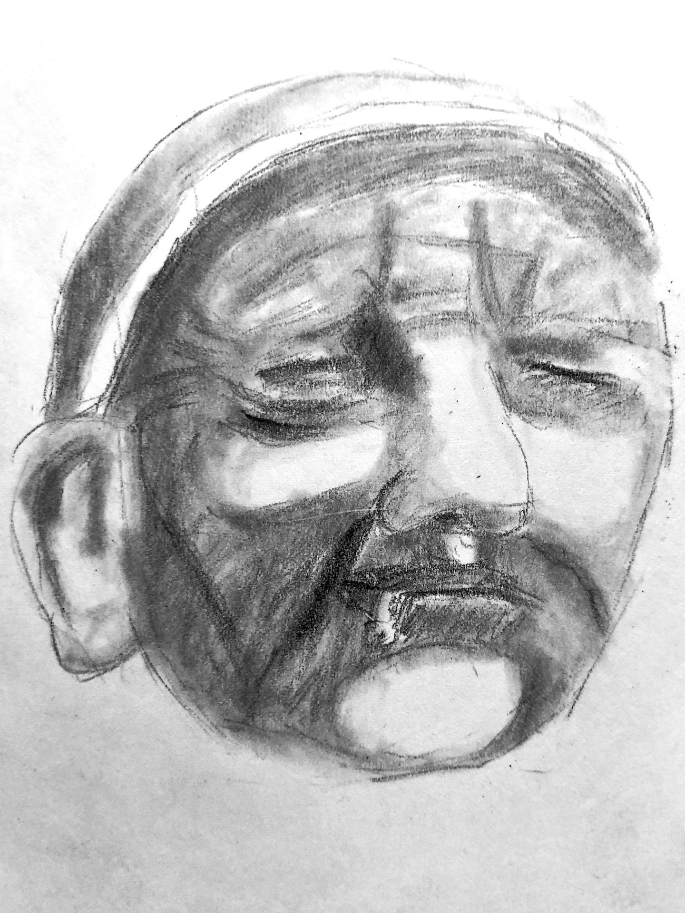
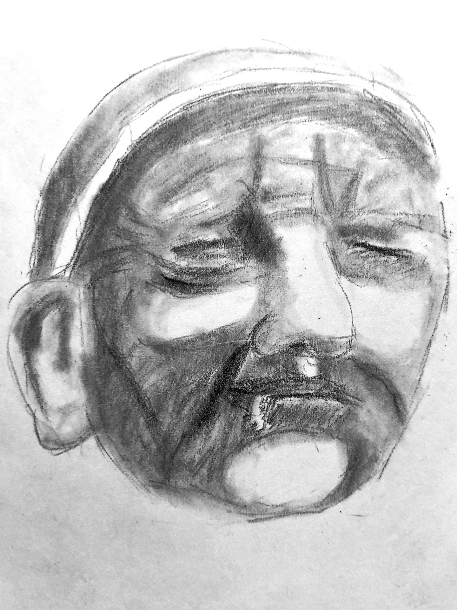

Head Anatomy 1, Week 3
Week of June 20
5h 42m of drawing
Had a dozen of my closest friends in SF for Interact. We're normally
scattered across the continent, so I spent most of this week hosting
dinner parties / playing DDR / walking around the city with them instead
of drawing.
Wednesday
2h 40m drawing
I really like how well defined the planes of the face are defined in the
Frankenstein lookalike (bottom-left)
The four faces in the right image were done with a 15 minute timer.
They don't look great, but I'm happy to be getting reps in.


Saturday
1h 2m
Left: Drew while waiting for my friends to arrive at an event instead of
making small-talk with strangers
Middle: Drawn by my friend
Right: Drawn by me, while explaining some principles of giving the
face and hair volume through shading to a friend
 



Sunday
2h 18m
Left: Unfinished
Middle and right: quite happy with these, feeling comfortable with
drawing faces in 30 minutes.
Feeling similar to how I did at the end of 3 weeks of figure
drawing
- I'm happy with my improvement
- I'm consistent with my quality given 30 minutes
- There's room for improvement, but I'll have to study more
theory
- I feel ready to move onto the next topic: perspective!
  
